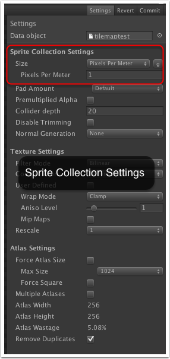
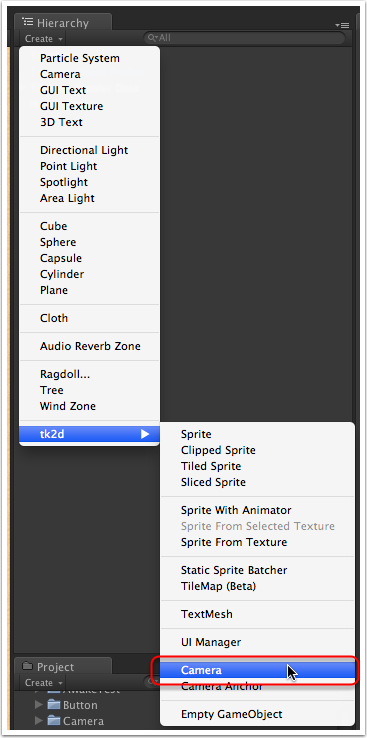
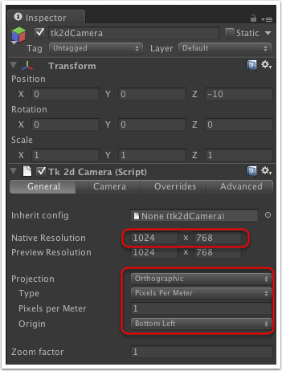
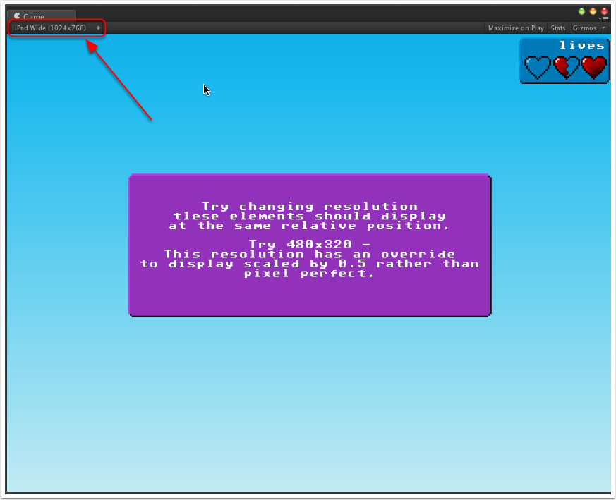
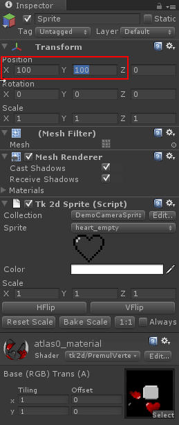
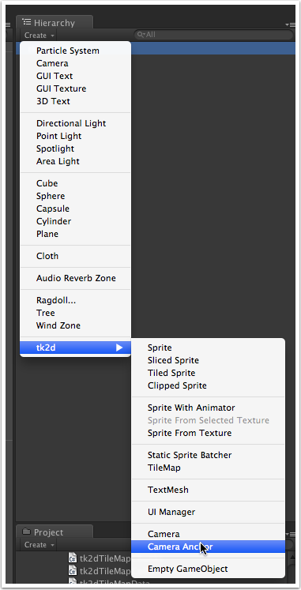
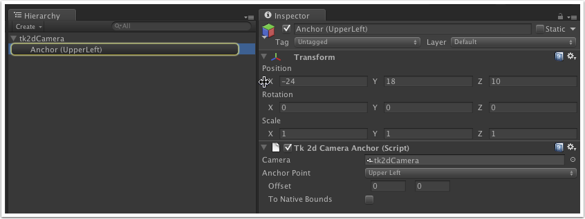
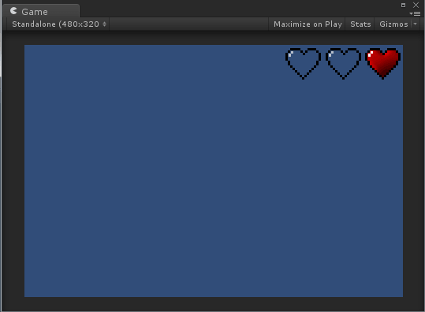
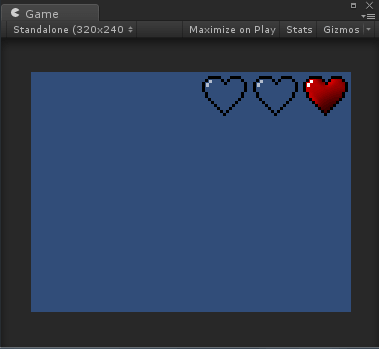

Documentation
Script Reference
Forum
Documentation
Script Reference
Forum
The tk2dCamera is a solution to make it a lot simpler to work with the Unity camera in 2D, and to make it automatically work with various resolutions with very little effort.
In order for sprites to work seamlessly with tk2dCamera, you should create your sprite collection / fonts with exactly the same settings as the camera you're going to be viewing it from. The easiest way to do this is to create your sprite collections after you have created your camera as 2D Toolkit will automatically detect settings for newly created sprite collections if there is a tk2dCamera already present in the scene.

Create a new scene and begin by deleting the default Unity "Main Camera".
Create a tk2dCamera by clicking on "Create > tk2d > Camera" in the Hierarchy Window. Alternatively, you can find this menu in "GameObject > Create Other > tk2d > Camera".

Set up the Native Resolution to the resolution you want your game to run at by default. We've picked 1024 x 768. Set up the projection parameters. In this example, we want the camera set up to work at 1 pixels per meter - This is a convenient setting, as you can position things in the scene by interchanging pixel locations with world positions.
Refer to Choosing a camera on some notes on how to pick an appropriate camera size.

tk2dCamera tries to work out the preview resolution (Game Window resolution) automatically. Simple set the Unity Game window resolution to the resolution you want to preview your game at. In this case, we'll be picking the same resolution as the native resolution (1024x768).

Add a sprite to the scene. Refer to Creating a Sprite in the Editor. Set 'Collection' to DemoCameraSpriteCollection and 'Sprite' to heart_empty if not already selected.
If you picked a sprite from a different sprite collection, and that sprite isn't set up correctly for the tk2dCamera you're using, the sprite might appear smaller or bigger than it should be. Click on the "1:1" button to fix this.
Position the sprite at (100, 100) by entering those numbers into the X and Y components of the transform. This works on this configuration, as the tk2dCamera is set up with 1 pixel per meter - so 100x100 world units = 100x100 pixels from the bottom left. If you picked a different pixels per meter ratio, the units will be relatively scaled. Eg. at 10 pixels per meter, 10.0 and 10.0 would map to (100, 100) pixels from the bottom of the screen.
tutorialtransform">
A tk2dCamera can resize itself based on the resolution its running at. Overrides tell the tk2dCamera what to do when running at a resolution different to the native resolution.
You can preview what you'd get at different resolutions by setting different game window resolutions.
Read more about overrides and what the settings do in the reference page.
The tk2d camera also supports anchors. These anchors will anchor themselves to one of the 9 parts of the screen (corners & centers). You may also specify an offset in pixels for these anchors. The coordinate system for the anchors is exactly the same as the coordinate system for the camera - an offset of (-100, 20) means 100 pixels to the left, and 20 pixels up in our demo.
Select the tk2dCamera created in the previous step.
Create an anchor by clicking on "Create > tk2d > Camera Anchor" in the Hierarchy Window. Alternatively, you can find this menu in "GameObject > Create Other > tk2d > Camera Anchor".

You can now set it up by setting the Anchor point and Offset parameters.

The anchor will always be positioned based on the parameters above. Any sprites attached to it will always be anchored to that relative position.
Eg. The hearts below are anchored to a "Top right" anchor and simply positioned using the transform widget. Observe that the position of the sprites remains constant relative to the screen corner its attached to.
Scene at 480x320

Same scene at 320x240
